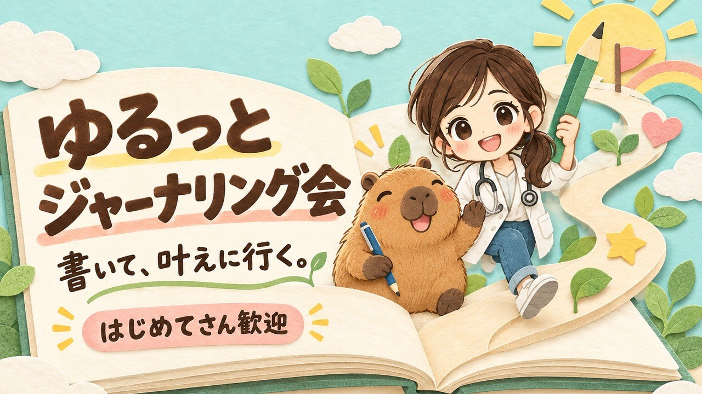

ちょるさんのプロフィールを読んで、「ここ好きだな」と思ったところを集めました。書き換え案は2つ。気に入ったところだけ持っていってください。おけもんより
※ デモで作ったお試しバージョンです。このページは、URLを知っている人だけが見られます。載せたくないところや、下げてほしい時は、おけもんまで気軽にどうぞ。

リベシティのノウハウ図書館で、みずのさんが自分のプロフィールを直したときの考え方です。いきなり書き直さず、先に「お手本」を集めるところが、この記事のおもしろさです。
リベシティで人気のプロフィール記事を、まずAIに読んでもらいます。
実例から、良いプロフィールの条件をリストにしてもらいます。みずのさんの場合は7つになりました。
自分のプロフィールを貼って、チェックと書き直し案をお願いします。「自分の言葉は変えない」と頼むのがコツです。
出典：みずの＠AIの今を動画で毎朝発信さん（ノウハウ図書館）
【AI活用のコツ】平凡な答えにガッカリする前に「うまくいってる実例」を集めてもらおう（3ステップの型を説明した記事です）
7つの条件が書かれた元の記事「【プロフィール見直し】人気記事から学んだ「7つの条件」」は、2026年10月9日にリンクを開いたら表示されませんでした。条件の中身は、以前読んだ内容をおけもん側で短くまとめ直したものです。細かい言い回しは、みずのさんの記事でご確認ください。
2026年10月9日に開いて読みました（最終更新は10月2日表示）。変えなくていいところを先に伝えさせてください。
「看護師って韓国で働けるの？」「海外に住んだら年金は？」と疑問が増えていく書き方は、読んでいる人が思わず「それ私も気になる」と言いたくなります。オフ会の最初の一言になりそうです。
ICU・救急外来で見てきたことから出てきた言葉だと伝わります。かっこつけていないのに芯があって、この人に相談したいと思わせてくれます。
収入の6〜8割を貯蓄・投資へ回すという事実のあとに、この一言。数字と人柄が同時に届きます。条件6の「話が広がるネタ」は、もう入っています。
会える場所が、ちゃんと書いてあります。「会いに行っていいんだ」と思えるので、オフ会を主催する人のプロフィールとして、これはとても強いです。
好きな言葉の欄がこれなのが、ちょるさんらしいです。主催者としての空気がここに出ています。
点数はつけません。「もう届いているところ」と「もう少し光らせられるところ」を見ただけです。
最初の行が「こんにちは、ちょると申します」のあいさつ。名前は上にも出ているので、「どんな人と会いたいか」を最初に置くと、検索画面でも伝わります。
表示名は「ちょる」だけでした。ここに小さな自己紹介が入ると、どこで会っても覚えてもらえます。
ジャーナリングは「趣味」の欄に入っています。オフ会を主催していく「いま」の顔なら、もっと前に出して大丈夫です。
「今やっていること」と「これからやりたいこと」がもう分かれています。そのまま残しましょう。
梅田オフィスの一言が効いています。
NISA貧乏？？、MBTIはISFJ、韓国の疑問の連鎖。ネタが何個もあります。
絵文字と改行でテンポが良いです。長い自己紹介を、見出しで3つに区切ると、さらに読みやすくなります。
どちらも、ちょるさんがすでに書いている言葉と、9月24日のオフ会で話してくれたことだけで作りました。ボタンを押すとコピーできます。そのまま貼っても、パーツだけ使ってもOKです。
「あいさつから始まる」流れを残して、冒頭の3行と並び順だけ整えた案です。変化が小さいので、まず試すならこちらです。
ちょる＠看護師×ジャーナリング×梅田オフィス
ICU・救急外来で働く看護師です🩺 ノートに書いて自分と話す「ジャーナリング」と、人に会うことが好きで、梅田オフィスによく出没しています🐙 「何か始めたい」「ちょっと誰かと話したい」という方、気軽に声をかけてください☺️ こんにちは☺️ ちょると申します🍒 🩺 看護師 × 🇰🇷 韓国 × 💰 お金 × 🌱 副業（🔰） 🌱 いま挑戦していること ・韓国語 ・資産形成（収入の6〜8割は貯蓄・投資へ。NISA貧乏？？……幸せです🍀） ・副業探し（「そもそも副業って何があるの？」からスタートした初心者🔰です😂） ・リベでいろんな人と交流 🚀 これからやりたいこと ・日本でも韓国でも働けるスキルを作る ・副業を実際に始める ・看護師の経験を活かして、誰かの役に立つ ・将来的には「自分で仕事を作る」ことにも挑戦したい 🗒️ わたしのジャーナリング 毎日、4つだけ書いています。 ①できたこと ②明日の自分のために直せること ③うれしかったこと ④今日の気分 大事にしているのは、自分の続く形を見つけること。合わなくなったら消していい、がわたしのルールです。 📍 会える場所 梅田オフィスによく出没します🐙 仕事のない日は、だいたいオフィスにいます😆 ✈️ ちょっとした小話 韓国人の彼と同棲中で、将来は韓国へ移住予定です。「看護師って韓国で働けるの？」と調べ始めたら、疑問が止まらなくなりました🤣 📚 MBTIは何回やってもISFJ。気になったら調べ始めて止まらないタイプです。 同じように「これから何か始めたい！」という方、ぜひ仲良くしてください🌷
9月24日に話してくれた「書いたら叶う、じゃなくて、書いて叶えに行く」を冒頭に置いた案です。ジャーナリングの型を見せて、お誘いの形で終わります。
ちょる＠ジャーナリングで自分と話す看護師
「書いたら叶う」じゃなくて「書いて叶えに行く」🗒️ ICU・救急外来で働く看護師が、毎日続けているジャーナリングの小さな型を、おしゃべりのついでにシェアしています。 梅田オフィスによく出没🐙 ノートを持って、気軽に話しにきてください☺️ こんにちは、ちょると申します🍒 🩺 看護師 × 🇰🇷 韓国 × 💰 お金 × 🌱 副業（🔰） 📓 ノートは3冊 ・日々のノート：予定の横に、今月の目標 ・価値観ノート：仕事・お金・恋愛・人生…を項目ごとに。変わったら書き換えます ・未来ノート：やりたいこと、叶えたいこと。チェックしても消えません ふと思いついたことは、まずスマホのメモへ。あとでノートに清書しています✍️ 🗒️ 毎日の4つ ①できたこと ②明日の自分のために直せること ③うれしかったこと ④今日の気分 続けるコツは、自分の続く形を見つけること。合わなくなったら、消していいんです。 🤝 こんな方と、お話ししたいです ・これから何か始めたい方 ・ジャーナリングを始めたい方、続かなかった方 ・韓国、お金、副業の話をしたい方 🌱 いま挑戦していること 韓国語／資産形成（収入の6〜8割は貯蓄・投資へ。NISA貧乏？？ 幸せです🍀）／副業探し（初心者🔰）／梅田オフィスでの日替わり管理人🌟 🚀 これからやりたいこと ・日本でも韓国でも働けるスキルを作る ・看護師の経験を活かして、誰かの役に立つ ・将来的には「自分で仕事を作る」ことにも挑戦したい 📍 会える場所 梅田オフィスによく出没します🐙 📚 MBTIは何回やってもISFJ。好きな言葉は「人を幸福にしようとしている人は幸福である」🍀 一緒に学んだり、挑戦したりできる方と出会えたら嬉しいです🌷
案Bの「日替わり管理人」は、ちょるさんのつぶやきにあった「日替わり管理人デビュー決定」から入れました。デビューの日が過ぎていたら、「やってみました」に変えてください。
事実がわからない部分は、おけもんが勝手に足していません。ここは、ちょるさんの言葉で埋めると、いちばん「ちょるさんのプロフィール」になります。
AIを使いはじめたら、下のお願い文をそのまま貼ってみてください。AIがこのページを読んで、ちょるさんのプロフィールを一緒に見直してくれます。読み込めないときは、プロフィールの本文を貼れば大丈夫です。
下のページを読んで、そこに書かれている「みずのさんの3ステップ」と「良いプロフィールの7つの条件」に沿って、私のリベシティのプロフィールを一緒に見直してください。 読んでほしいページ： https://okemonogatari-hash.github.io/html-share-box/friend-share-g-daW1jVduZyFSXXdm/profile.html 私のプロフィール： https://libecity.com/user_profile/sJULmU976dOZn3DJj5tyN4392503 （読めないときは、私が本文を貼ります） 進め方： 1. 私のプロフィールを7つの条件でチェックして、「届いているところ」と「伸びしろ」を教えてください。 2. ページにある案Aと案Bを参考にして、私の言葉やキャラクターは変えずに、構成の組み替えを中心に書き直し案を作ってください。 3. 事実がわからない部分は、勝手に足さず、私に質問してください。 4. 一度で仕上げず、会話しながら直していきたいです。